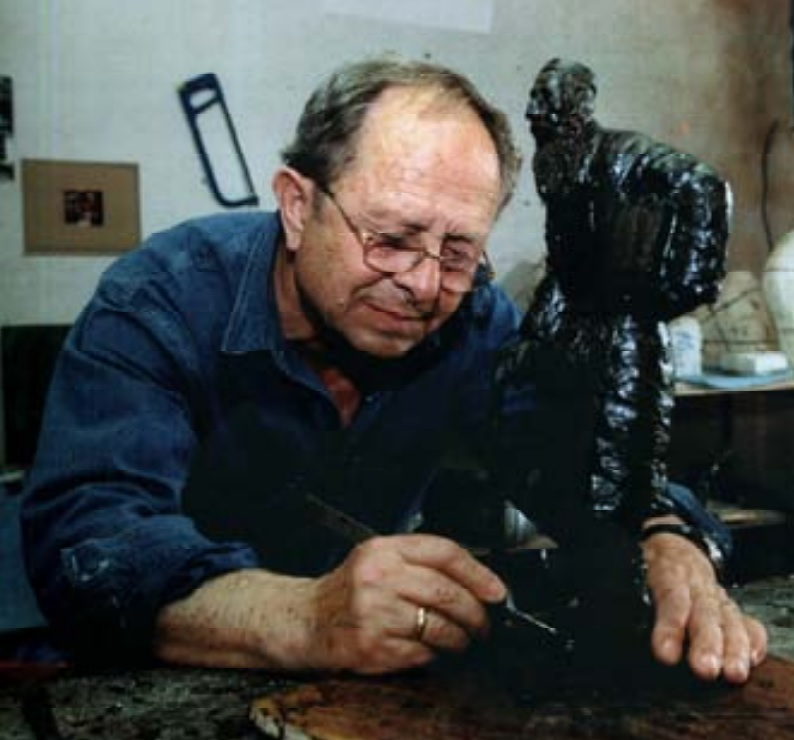

Lev Segal
Lev Segal
(1933 – ), Israeli Sculptor.
Sculptures and Relives.
Contact me
here
.
About Lev Segal
Born in Ukraine in 1933, immigrated to Israel in 1973.
Studies: Graduate of the art institute in Kiev.
Segal is a member of the artists’ village Sha-Nur.
Since 1986 he has been exhibiting his works privately and as part of group exhibitions in:
Moscow
Kiev
France
Germany
United States
Israel
Work of Lev Segal:
Sculptures
Relieves
Lev Segal on Youtube:
Opening of Shalom Aleichem statue on July 19, 2012. Part 1
Opening of Shalom Aleichem statue on July 19, 2012. Part 2
"Klezmer" and "Fiddler on the Roof" in Netanya
Opening of the exhibition of the sculptor Lev Segal in "Heichal Hatarbut"